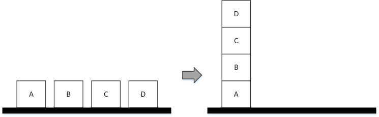

Blocks-world PDDL Java¶
Getting started¶
The framework is released as JAR file to be used on a Desktop platform, therefore it can be easily imported and used in any Java project.
The framework needs ANTLR4 library for its operation. You can download the JAR and include directly in your project or you can use Gradle or Maven.
Using EmbASP¶
In the following, we describe an actual usage of the framework by means of a running example; as a use case, we will develop a simple Desktop application to solve the blocks-world problem.
The complete code of this example is freely available here.
We will make use of the annotation-guided mapping, in order to retrieve the actions constituting a PDDL plan via Java objects.
To this purpose, the following classes are intended to represent possible actions that a blocks-world solution plan can feature:
@Id("pick-up")
public class PickUp {
@Param(0)
private String block;
[...]
}
@Id("put-down")
public class PutDown {
@Param(0)
private String block;
[...]
}
@Id("stack")
public class Stack {
@Param(0)
private String block1;
@Param(1)
private String block2;
[...]
}
@Id("unstack")
public class Unstack {
@Param(0)
private String block1;
@Param(1)
private String block2;
[...]
}
At this point, supposing that we are given two files defining the blocks-world domain and a problem instance, we can start deploying our application:
public class Blocksworld {
private static String domainFileName = "domain.pddl";
private static String problemFileName = "p01.pddl";;
public static void main(String[] args) {
Handler handler = new DesktopHandler(new SPDDesktopService());
final InputProgram inputProgramDomain = new PDDLInputProgram(PDDLProgramType.DOMAIN);
inputProgramDomain.addFilesPath(domainFileName);
final InputProgram inputProgramProblem = new PDDLInputProgram(PDDLProgramType.PROBLEM);
inputProgramProblem.addFilesPath(problemFileName);
handler.addProgram(inputProgramDomain);
handler.addProgram(inputProgramProblem);
try {
PDDLMapper.getInstance().registerClass(PickUp.class);
PDDLMapper.getInstance().registerClass(PutDown.class);
PDDLMapper.getInstance().registerClass(Stack.class);
PDDLMapper.getInstance().registerClass(Unstack.class);
Plan plan = (Plan)(handler.startSync());
for (final Object obj : plan.getActionsObjects())
if (obj instanceof PickUp || obj instanceof Stack || obj instanceof Unstack || obj instanceof PutDown)
System.out.println(obj.toString());
} catch (Exception e) {
e.printStackTrace();
}
}
}
The class contains an Handler instance as field, that is initialized with a DesktopHandler using the required parameter SPDDesktopService.
Then it’s set-up the input to the solver; since PDDL requires separate definitions for domain and problem, two PDDLInputProgram are created and then given to the handler.
The next lines inform the PDDLMapper about what classes are intended to map the output actions.
Finally the solver is invoked, and the output is retrieved.
The output actions can be managed accordingly to the user’s desiderata.
For further information, contact embasp@mat.unical.it or visit our website.